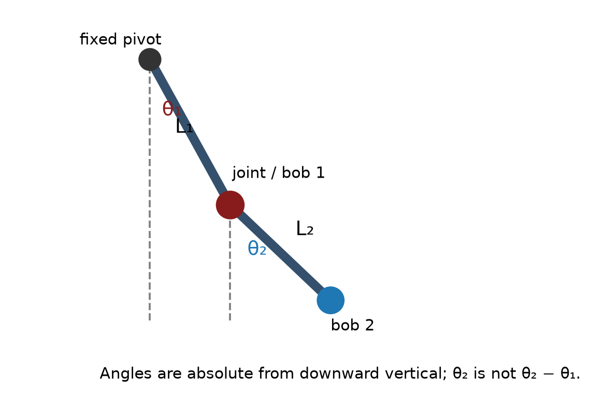

Fall 2026 · Monday, October 5 · 50-minute theory class
Lecture 04 · Double pendulum
Two connected links, two measured angles, coupled motion, high-speed video, simulation, and Pre-Lab 3.
Lecture slides
The PowerPoint and PDF contain the same 33-slide expanded lesson, with editable typeset equations, physical definitions, and step-by-step energy derivations.
Pre-Lab 3
Supplied simulation code, predictions, figures, and six written analysis questions. No programming assignment.
Laboratory procedure and MATLAB files
App V4, two-bob tracking, coordinate conversion, simulation, and analysis.

Energy and symbols explained
Slides 4–6 define masses, lengths, angles, speeds, and coordinates. Slides 7–17 derive potential energy from height and kinetic energy from motion, explain the coupling term, distinguish ideal energy conservation from real losses, and connect energy to the equations of motion. Slide 33 provides a symbol and units reference. Additional teaching explanations are included in the PowerPoint speaker notes.
In class
- Identify the two links, measured masses and lengths, and the two absolute angles.
- Connect gravitational potential and kinetic energy to a coupled 2×2 acceleration model.
- Contrast low-angle modes with high-angle nonlinear motion and close initial conditions.
- Follow the camera-to-MAT workflow and learn what the MATLAB scripts calculate.
- Plan four releases and the evidence needed before leaving Lab 3.
The baseline model includes the masses of both bars. It omits pivot friction and air drag; real measured amplitudes may decay. A finite record can show sensitivity to initial conditions but does not by itself prove chaos.